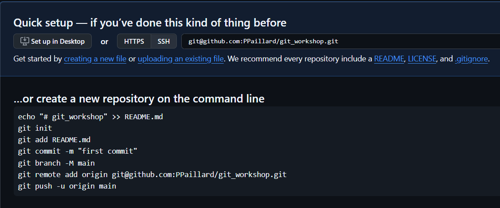
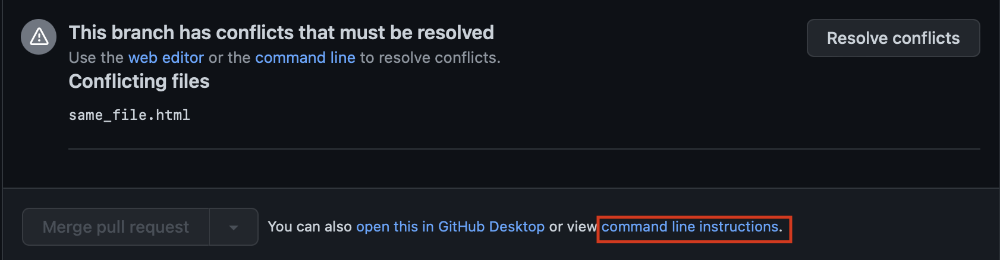

Special guests: Tic et Tac
En équipe de 2, suivez les instructions, chaque personne choisissant son rôle ! Colonne de gauche : Tic. Colonne de droite : Tac. Dans cet atelier, vous apprendrez comment collaborer à l’aide de Git et GitHub, comment gérer les conflits de fichiers et comment versionner votre code.
Tic
Crée un nouveau répertoire vide nommé
my-project
sur votre poste de travail. Crée un nouveau repository public vide
sur GitHub appelé
my-project
sur votre profil. (Pas de génération de README.md !!)
Tac
Regarde ce que fait Tic et sois attentif.
Tic
Dans le nouveau dossier
my-project
situé localement sur ton ordinateur, suis les commandes répertoriées
sur GitHub dans
…or create a new repository on the command line.
Assure-toi d’avoir coché l’option SSH, pas HTTPS.
Tac
Explique à Tic ce qu’il fait à chaque étape.
Ces commandes

Tic
Donne le lien vers le repo à Tac et comprenez ensemble comment le cloner sur son ordinateur.
Tac
Clone le repo nouvellement créé de Tic en renommant le répertoire
cible local “my-tac”.
Attention, utilise :
git clone url_of_the_new_repository my-tac
Tout le monde
Ouvrez le répertoire du projet dans votre éditeur de code.
Tic
Modifie le fichier README.md en tapant :
# my-project
Comment installer ce projet ?
Tout ce que nous avons à faire pour l'instant, c'est de le cloner.
Tac
Regarde ce que fait Tic et sois attentif.
Tic
Crée le fichier
another_file.html
dans le répertoire du projet.
Ajoute un commentaire à l’intérieur du fichier :
<!-- tapez votre commentaire ici -->
Tac
Crée le fichier
not_same_file.html
dans le dossier du projet.
Ouvre le fichier et ajoute également un commentaire à l’intérieur,
peu importe qu’il soit identique ou différent.
Tic
Regarde ce que fait Tac, essaye de comprendre ce qui se passe à chaque étape et quel est le résultat.
Tac
Crée le fichier
secret_file.html
contenant :
<!-- Ne doit pas être partagé sur GitHub car c'est le mot de passe que j'utilise
pour gmail, Facebook, mon ordinateur portable, et si je le pouvais,
je l'utiliserais pour le code PIN de mon téléphone -->
Exécute :
git status
Ignore le fichier
secret_file.html
en créant un fichier
.gitignore
(clique ici
pour plus d’informations) et en ajoutant les instructions
nécessaires.
Tic
Exécute :
git status
Tac
Exécute :
git status
Le fichier
.gitignore
devrait apparaître.
Tout le monde
git add .
git status
git commit -m "Change me"
Remplacez
"Change me"
par un message explicite expliquant ce que vous avez fait. Il n’y a
pas de limites, et vous pouvez appuyer sur Entrée tant que vous
n’avez pas fermé les guillemets.
Tic
Commence par pousser :
git push
Tac
Pareil pour toi, après Tic :
git push
Tic
Tout s’est bien passé pour toi.
Tac
Tu as un message d’erreur : que dit le message ?
Tic
Puisque tu es propriétaire du dépôt, tu dois autoriser Tac à
travailler dessus…
Accéde à “Settings” > “Collaborators and team” et ajoute Tac en
tant que collaborateur.
Tac
Tu dois accepter l’invitation que tu as dû recevoir dans ta boîte mail. Essaye ensuite à nouveau de transférer ton commit vers le repo en ligne :
git push
Tic
En tant que “Ranger du risque”, aide Tac.
Tac
Tu as un autre message d’erreur ! Que dit le message ?
Trouve la solution sans chercher sur Internet, simplement en lisant
le message dans la console.
Si tu es vraiment bloqué, appelle ton formateur ou ta formatrice pour obtenir de l’aide !
Une fois le problème résolu, tu peux enfin pousser :
git push
Ensemble
Vérifiez la mise à jour sur GitHub. Le fichier
secret_file.html
est-il là ?
Tic
Fais un
git pull
pour obtenir les dernières modifications apportées par Tac.
Crée ensuite une nouvelle branche à partir de la branche
actuelle :
git branch tic_branch
git switch tic_branch
Ou directement :
git switch -c tic_branch
Tac
Suis les mêmes instructions que Tic et créez une nouvelle branche
tac_branch.
Tic
Crée un fichier
same_file.html
et saisis un commentaire :
<!-- tapez votre commentaire ici -->
Tac
Crée un fichier
same_file.html` et tape également un commentaire à l’intérieur, mais pas le même
que Tic !
Tout le monde
git add .
git status
git commit -m "Change me"
Tic
Publie ta branche sur GitHub en utilisant :
git push origin tic_branch
Tac
Publie ta branche sur GitHub en utilisant :
git push origin tac_branch
Tic
Crée une pull request sur GitHub depuis ta branche
tic_branch
vers
main (sois
prudent avec la direction).
Vérifie si “able to merge” s’affiche. Ajoute une description : “Explain what you modified and how to test it”.
Tac
Regarde ce que fait Tic et fais de même avec ta branche (tac_branch
vers main)
Tic
Regarde ce que fait Tac et aide-le si nécessaire.
Tac
Va sur GitHub et accéde à ta pull request.
Vérifie si tout semble bon, puis clique sur le bouton “Merge pull
request”.
🥳 Bon travail ! Tu viens de réussir la fusion de ta première branche ! Maintenant, tu peux voir ton travail sur la branche principale.
Tic
Suis les mêmes étapes que Tac pour valider ta pull request et pouvoir fusionner ta branche.
Fichtre ! Il y a un conflit ! tu peux voir le message : “This branch has conflicts that must be resolved”.
Tac
Regarde ce que fait Tic.
Regardez ça ensemble
Tic
Au lieu de résoudre les conflits sur GitHub comme indiqué dans la vidéo, fais-le localement dans ton éditeur de code.
Sur GitHub, clique sur “command line instructions” comme indiqué
dans l’image suivante et suis les instructions. N’oublie pas de
faire un
git status
entre chaque étape et d’en discuter avec Tac.

Tac
Regarde ce que fait Tic et aide-le si besoin (une deuxième personne ne sera pas toujours là pour résoudre les conflits avec vous, alors profitez-en !)
Tic
Maintenant qu’il n’y a plus de conflits, reviens à la pull request
sur GitHub, vérifie si tout va bien et clique sur le bouton
Merge pull request.
Tac
Regarde ce que fait Tic et aide si nécessaire.
Ensemble
Vous avez résolu avec succès un conflit de fusion dans une pull request, félicitations ! 🥳